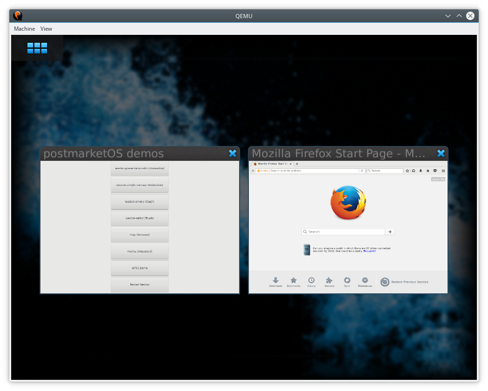

Hildon
|
 Hildon running in QEMU | |
| Name | Hildon |
|---|---|
| Graphics stack | X11 |
| Toolkit | GTK+2 |
| In postmarketOS | |
| Package | N/A |
| Status | Unavailable |
{kind=link}

This is the UI from Maemo Fremantle, which is a Debian-based distribution that originally ran on the Nokia N900. postmarketOS had an incomplete and not well maintained Hildon port based on the Maemo Leste sources, until April of 2020. It was removed as several features were missing, broken, and we could not upgrade it without investing much time to resolve packaging conflicts.
The Maemo Leste project runs Hildon on top of a recent Devuan (Debian fork) with OpenRC (same init system as Alpine), and all the devices they are targeting run the mainline kernel (Droid 4, N900, N9, ...). So for anybody who wants to run Hildon, check out Maemo Leste.
If somebody is willing to invest a lot of time for a new postmarketOS port of Hildon/Maemo Leste, let us know in the issues!
See also
- pmaports#373 Dropping Hildon unless a maintainer steps up
- maemo in pmaports tree before it was removed
- https://github.com/postmarketOS/pmbootstrap/pull/461 (initial PR by NotKit with a screenshot running in QEMU)
- https://github.com/fremantle-gtk3 (interesting WIP GTK+3 port)